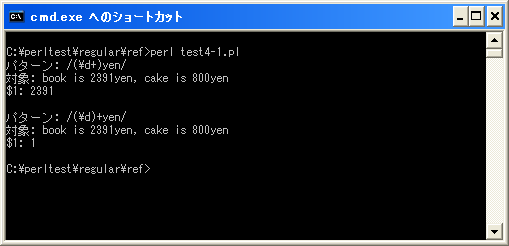

- Home ›
- Perl入門 ›
- Perlにおける正規表現 ›
- マッチした部分の取得
括弧()の位置による取得文字列の違い
パターン内で括弧を使用してマッチする部分文字列を取得する場合、繰り返しを表すメタ文字と組み合わせて使用する際に括弧の位置によって結果が異なる場合があります。
メタ文字「+」
まずはメタ文字の「+」を使用する場合です。
/(¥d+)yen/
「¥d+」は数字が1回以上繰り返された場合にマッチします。そして「¥d+」全体が括弧()で括られていますので、このパターンがマッチした場合、変数「$1」には「¥d+」にマッチした全体が格納されます。
my $str = "book is 2391yen, cake is 800yen";
if ($str =~ /(¥d+)yen/){
print "$1¥n";
}
上記の場合ですと、変数「$1」には「2391」が格納されます。
今度は次のようにパターンを記述してみます。
/(¥d)+yen/
今度の場合、「(¥d)+」全体としては数字が1回以上繰り返された場合にマッチすることに代わりはありませんが、括弧は「¥d」だけを括っています。この場合は「¥d」にマッチした文字が都度変数「$1」に格納されます。メタ文字(+)によって「¥d」とマッチするかどうかが1回以上繰り返され、最後に「¥d」にマッチした文字が変数「$1」に最後に格納されます。
my $str = "book is 2391yen, cake is 800yen";
if ($str =~ /(¥d)+yen/){
print "$1¥n";
}
上記の場合ですと、変数「$1」には「1」が格納されます。これは「2」「3」「9」「1」と順に変数「$1」に格納されていき、最後に格納された「1」が残っているためです。
メタ文字「?」とメタ文字「*」
次にメタ文字の「?」と「*」の場合です。基本的にはメタ文字の「+」の場合と同じですが異なるのは0回マッチも許されている点です。
まず繰り返しを表すメタ文字が括弧の中にある場合です。
/(¥d*)yen/
この場合、変数「$1」には括弧で括られた「¥d*」にマッチした文字列が格納されます。1回以上マッチした場合はメタ文字(+)の場合と同じですが、0回マッチした場合には「¥d*」は空文字にマッチしたことになるため変数「$1」には空文字が格納されます。
次に繰り返しを表すメタ文字が括弧の外にある場合です。
/(¥d)*yen/
この場合、変数「$1」には「¥d」にマッチした文字格納されますが、「¥d」に一度もマッチしまなかった場合は変数「$1」には値が一度も格納されず未定義値(undef)となります。ただし「(¥d)」に対してメタ文字(*)が設定されていますのでパターン全体としてマッチするかどうかに影響ありません。
このようにメタ文字の「*」や「?」を使用する場合に一度もマッチしない場合の挙動が若干異なります。
サンプルプログラム
では簡単なプログラムで確認して見ます。
use strict;
use warnings;
use utf8;
binmode STDIN, ':encoding(cp932)';
binmode STDOUT, ':encoding(cp932)';
binmode STDERR, ':encoding(cp932)';
print "パターン: /(¥¥d+)yen/¥n";
&check1("book is 2391yen, cake is 800yen");
print "¥n";
print "パターン: /(¥¥d)+yen/¥n";
&check2("book is 2391yen, cake is 800yen");
sub check1{
my ($str) = @_;
if ($str =~ /(¥d+)yen/){
print "対象: $str¥n";
print "¥$1: $1¥n";
}
}
sub check2{
my ($str) = @_;
if ($str =~ /(¥d)+yen/){
print "対象: $str¥n";
print "¥$1: $1¥n";
}
}
上記を「test4-1.pl」の名前で保存します(文字コードはUTF-8です)。そしてコマンドプロンプトを起動し、プログラムを保存したディレクトリに移動してから次のように実行して下さい。

( Written by Tatsuo Ikura )

著者 / TATSUO IKURA
初心者～中級者の方を対象としたプログラミング方法や開発環境の構築の解説を行うサイトの運営を行っています。